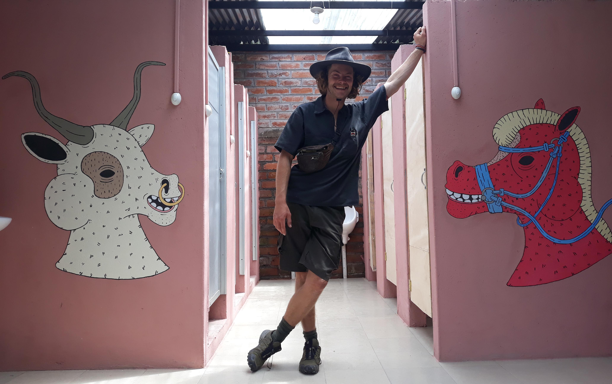

I studied architecture at the univerity of Cape Town and at the same time worked part time at Bronze Age sculpture studio. Since long have I had a passion for visual art and the lessons I have learned from both architecture and sculpture have enriched and fueled this passion. After completing my undergraduate I have worked for the film industry in Cape Town as a junior draftsperson in the construction department and later as a junior set designer in the art department. Hence 3D modelling and architectural drawings too have fueled my passion and capability of making visual art.
Currently I am traveling in South America with my bicycle. I have a computer with me and I am working on digital illustrations and animations in my free time
